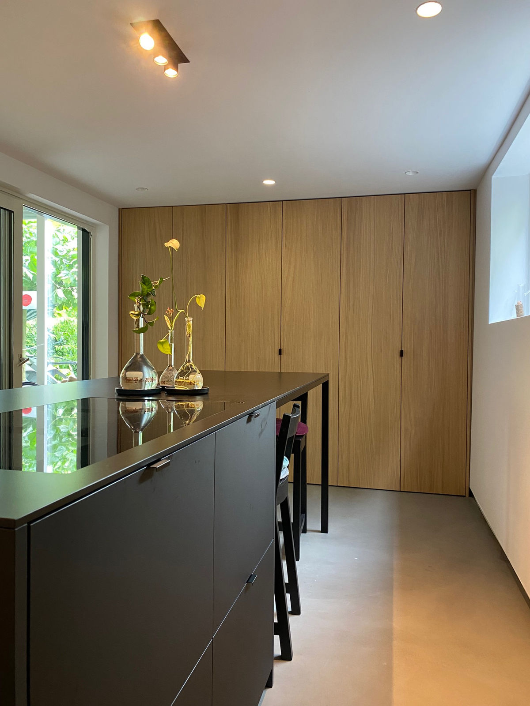
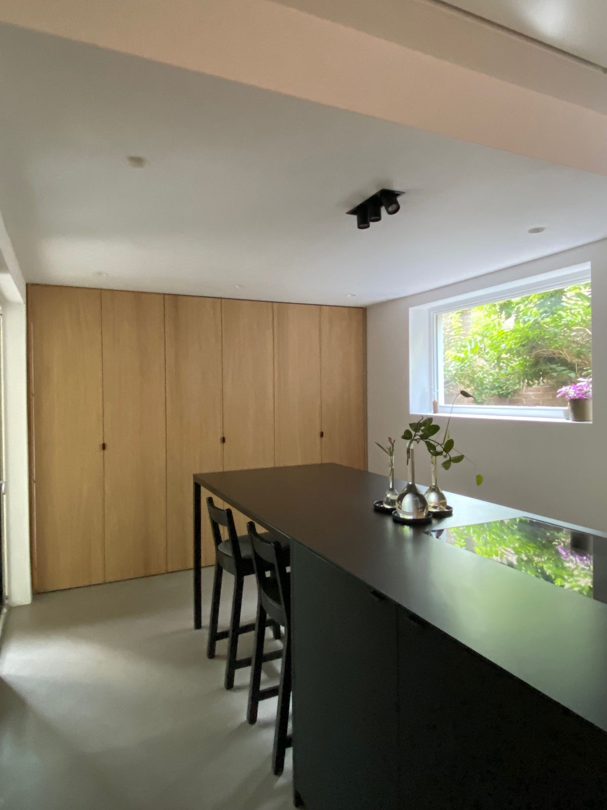
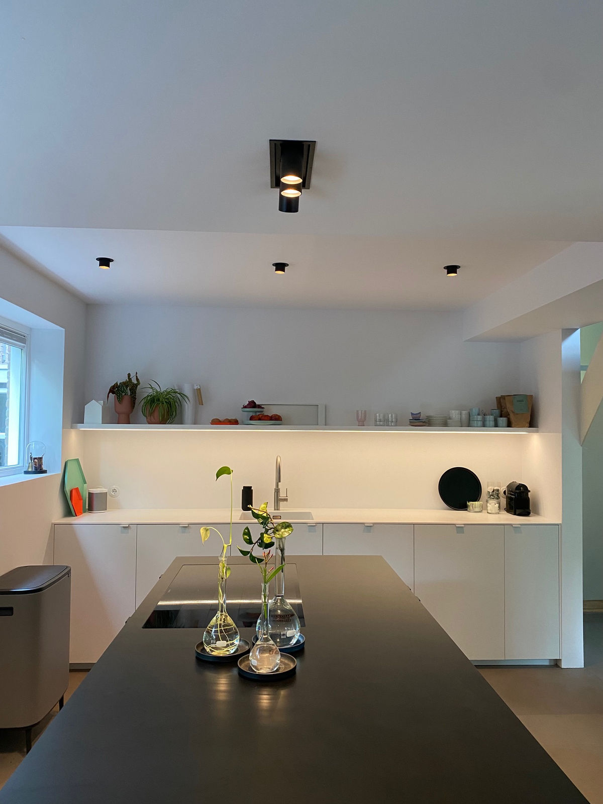
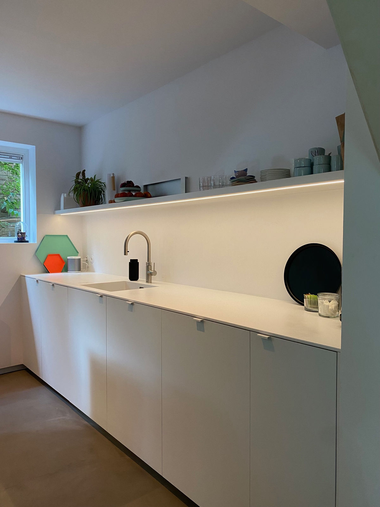
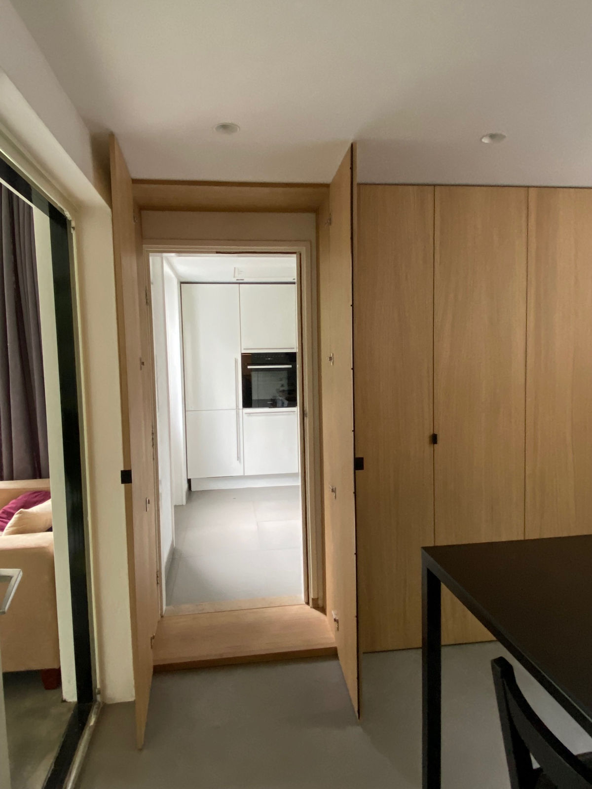

Design keuken
Uitgesproken designkeuken waarin materiaalcontrast en strakke lijnen de toon zetten.
TypeDesign keuken
RealisatieVervoort Interieurbouw





Uitgesproken designkeuken waarin materiaalcontrast en strakke lijnen de toon zetten.




